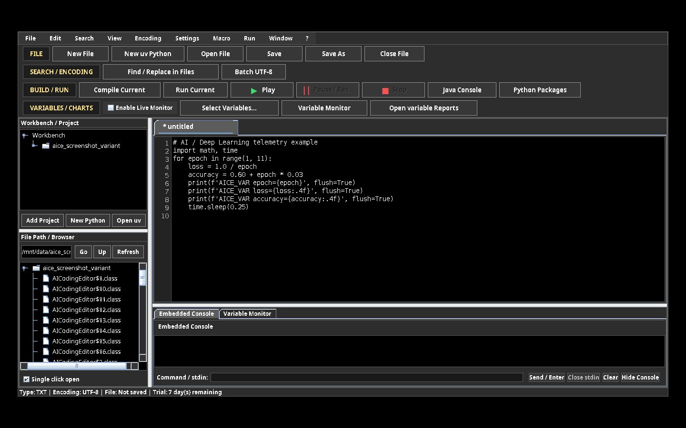
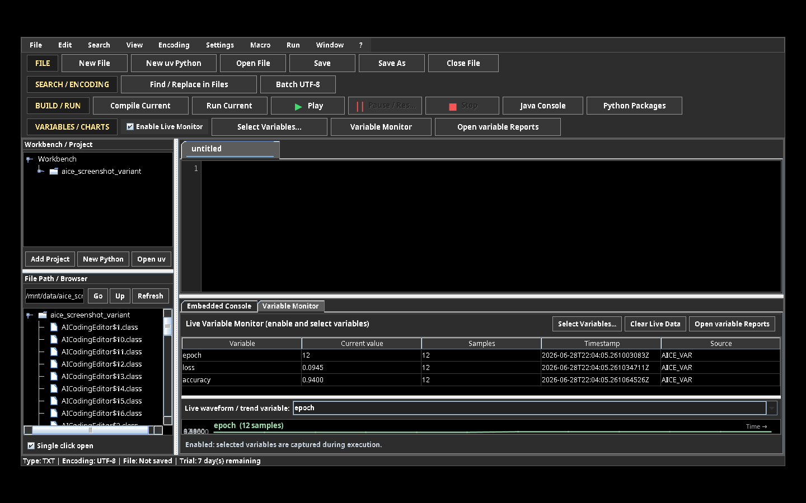
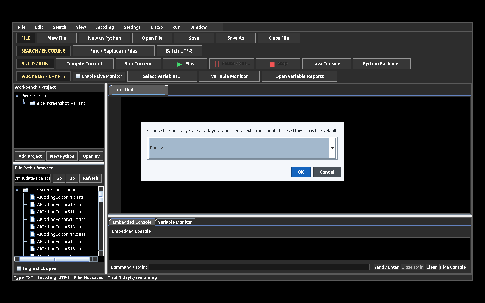
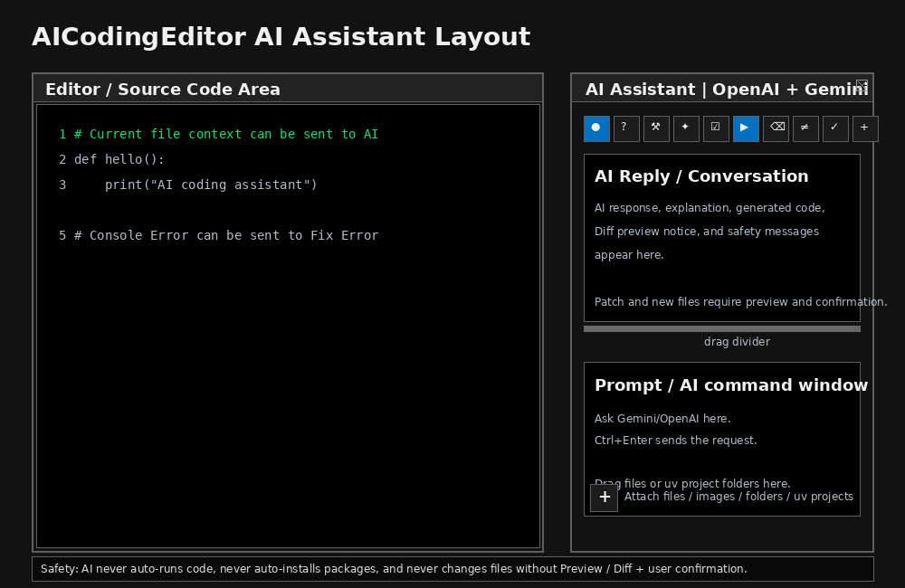

V0.2.99-01a Alpha 1 · Multi-language coding, databases, AI, machine learning, deep learning, run reports, and live variable monitoring.
GitHub language packages: This Alpha release is available with English, Traditional Chinese, or Simplified Chinese as the package default. The interface language can still be changed later under Settings → Preference → General → Language.
V0.1.32 distribution note: Manuals and examples are packaged beside the EXE/JAR and also inside the JAR for recovery when folders are moved.
AICodingEditor is a multi-language code editor and workbench. It combines code editing, syntax highlighting, Workbench and file browsing, Embedded Console execution, Python uv environments, SQL workflows, AI learning projects, and program-run data reports.
The following images are actual English AICodingEditor window captures. Their labels are in English so the English manual is fully readable without Chinese UI knowledge.

Actual English editor layout: menu and toolbar at the top; Workbench and File Browser on the left; editor tabs and code editor on the right; Embedded Console / Variable Monitor tabs at the bottom.
| Area | Relative position | Use |
|---|---|---|
| Menu and toolbar | Top | File, search, build/run, and Variables / Charts controls. |
| Workbench / File Browser | Left | Project navigation and active-file feedback. |
| Editor tabs / source editor | Upper right | Source editing, syntax highlighting and file tabs. |
| Embedded Console / Variable Monitor | Lower right | Interactive Program stdin, process controls, live values and waveform. |

Actual English Live Variable Monitor: selected variables appear in a table and numeric variables can be viewed as a live waveform / trend.

Actual English Language dialog. Choose Traditional Chinese, Simplified Chinese, or English under Settings → Preference → General → Language.
The right-side AI Assistant panel contains the AI action strip, conversation area, Prompt / AI command window, attachment strip, and the bottom-left + attach menu.

AI Assistant: choose Chat, Explain, Fix Error, Generate Code, or Review Code from the top icon strip; click ▶ or press Ctrl+Enter to send. The bottom-left + menu attaches files, images, folders, or uv projects; files can also be dragged from the left tree into the Prompt area.
AICodingEditor.exe and AICodingEditor.jar in the same folder.variable.| Language | Requirement / path example | Setting |
|---|---|---|
| Java | JDK 17+; Default: <AICodingEditor folder>\JDK-26.0.1\bin. | System PATH; verify java -version and javac -version. |
| Python | Python 3 + uv; each AI project can own .venv. | Settings → Preference → General → Python Interpreter / uv Python Projects. |
| C / C++ | GCC/G++ or MinGW; Windows example <AICodingEditor folder>\Dev-Cpp\MinGW64\bin\gcc.exe, g++.exe. | Settings → Preference → General → Languages & Toolchains. |
| C# | .NET SDK or csc. | Languages & Toolchains → C# compiler. |
| JavaScript / PHP | Node.js / PHP CLI. | Languages & Toolchains → runtime command or full path. |
| Rust | rustc / Cargo. | Languages & Toolchains → Rust compiler. |
| Arduino | Arduino CLI, board FQBN and library root. | Languages & Toolchains → Arduino CLI / FQBN / Library root. |
| SQL | SQLite CLI, sqlcmd for MS SQL Server, mysql CLI for MySQL workflow. | SQLite target / MS SQL Driver settings. |
# Python: keep the newline and flush so the Embedded Console can update immediately
print(f"AICE_VAR loss={loss:.4f}", flush=True)
print(f"AICE_VAR accuracy={accuracy:.4f}", flush=True)
print("AICE_TABLE_BEGIN training_history")
print("epoch,loss,accuracy")
print("1,0.82,0.61")
print("2,0.54,0.78")
print("AICE_TABLE_END")
print("AICE_FIG training_curve.png")Every supported program Run automatically creates a timestamped report folder:
<source-file-folder>/variable/<source-file-stem>_YYYYMMDD_HHMMSS_SSS/ AICodingEditor_RunReport.xlsx console_io.txt variables.csv run_metadata.txt table/ fig/
| Captured item | How it is captured | Report result |
|---|---|---|
| Program input | Text sent through Program stdin. | Variables and Console I-O worksheets. |
| Program output | Standard output / error from an actual Run. | Console I-O worksheet and text log. |
| Variables | AICE_VAR name=value, name=value, name: value, or one-line JSON. | Variables worksheet and variables.csv. |
| Tables | AICE_TABLE_BEGIN ... AICE_TABLE_END, or CSV/TSV/JSON created/updated by the program. | One Excel worksheet per table and copied table files. |
| Figures | AICE_FIG relative_or_absolute_path, or PNG/JPG created/updated by the program. | Copied PNG under fig, embedded in the Figures worksheet. |
| Periodic data | Tables with date/time-like first column or increasing numeric first column plus numeric series. | Automatic PNG time-series chart under fig; included in the XLSX report. |
AICE_VAR or name=value. This portable protocol works across all supported languages.The live monitor records samples while the process is running. It retains the complete numeric sample history for the current run. The live chart decimates only drawing pixels for exceptionally large runs; CSV and XLSX retain every row.
mysql CLI through Embedded Console or configure code-specific packages/drivers.| Area | Packages |
|---|---|
| Core data | numpy, pandas, scipy, openpyxl |
| Visualization | matplotlib, seaborn, plotly |
| Machine learning | scikit-learn, xgboost, lightgbm |
| Deep learning | tensorflow, keras, torch, torchvision, torchaudio |
| Computer vision | opencv-python, pillow |
| NLP / LLM | transformers, datasets, tokenizers, sentencepiece |
| Graph / model visualization | pydot, graphviz (plus native Graphviz dot executable) |
Use AICodingEditor.app or Run_AICodingEditor.command. Install Java 17+ and make sure java is available through JAVA_HOME or PATH. The internal-test bundle is not Apple-notarized; first launch may require Finder → right-click → Open.
Common toolchain root: The default root is the folder containing AICodingEditor.exe and AICodingEditor.jar. Use Settings → Preference → General → Languages & Toolchains and click Apply Common-Root Defaults to set sibling defaults for D:\JDK-26.0.1, D:\Dev-Cpp, D:\ArduinoCLI, D:\Arduino, and D:\SQL_Driver.
Streamlit button: Open a saved .py file and click Streamlit. The editor runs streamlit run current_file.py using the active uv environment when available; otherwise it uses the configured Python interpreter. Install once per environment with python -m pip install streamlit. Use Stop to end the Streamlit server.
The internal test build verifies Internet time at startup. After the seven-day trial ends, the editor is read-only: files can be opened and read, but saving, creating projects, compiling, running, and Console commands are disabled.
The AI Assistant’s Send to AI button is now clearly blue whenever it is ready. While a request is running, it shows Sending... in gray, then automatically becomes blue again after the request succeeds, fails, or times out.
Sending a prompt is a non-destructive network request, so it is no longer tied to the editor’s legacy write/build guard. Creating a file from AI code and applying a Patch remain protected by path selection, preview/Diff, and explicit confirmation.
The primary Send to AI button now occupies its own full-width row directly below the prompt box. It remains visible when the AI dock is narrow or the application window is short.
Clear, Preview Diff, Apply Patch, and Create New File are placed in a separate compact row, so they cannot wrap or hide the Send button. Ctrl+Enter remains available as a keyboard shortcut.
The AI request-context and safety options have moved from the Assistant panel to AI → AI Provider Settings (also available from the gear icon). This includes selected code, current file, Console Error, Full Project Scan, Auto Run, and Auto Install Package.
The AI conversation and prompt boxes are now separated by a draggable divider, so either box can be enlarged. The five lower actions use compact icon buttons with hover text: Send, Clear, Preview Diff, Apply Patch, and Create New File. Ctrl+Enter remains the keyboard shortcut for sending.
The base workspace now uses a black background with white text for stronger contrast. Active tabs use blue only as a clear selection indicator.
Closing a Console tab while a child program is still running asks whether to stop that program first.
Workbench and File Browser now force a Basic Swing tree renderer: normal rows use a black background with white file/folder names. The right-click navigation menu is also black with white text; the armed item is blue.
Workbench remove and navigation deletion confirmations now use an application-owned high-contrast dialog so their message and Yes/No controls remain readable even when a Windows theme ignores native colors.
Editor file tabs use a Basic tab renderer and reserve a dedicated right-side × close column. The white × is always visible; hovering it turns the button red. Modified files keep the existing save/discard/cancel confirmation.
The IDE tool-icon strip that was previously below the menu bar now shares the same row as File, Edit, Search, View, Encoding, Settings, AI, Macro, Run, Window, and ?, aligned at the right edge.
All icons retain hover tooltips and accessible names. File, search, compile/run, Java, Streamlit, Jupyter, Python package, Embedded Console, and Variable Monitor actions remain available. Removing the former second row gives more vertical space to Workbench, the code editor, Embedded Console, Variable Monitor, and the AI panel.
Version 0.1.27 stores every telemetry line as an independent time-series row. Variables are not collapsed into one Name / Value field. The primary files are variables.csv and the Variables sheet in AICodingEditor_RunReport.xlsx.
AICE_VAR sample=0 time_s=0.000 x=0 y1=0.000000 y2=1.000000 AICE_VAR sample=1 time_s=0.200 x=1 y1=0.017452 y2=0.999848
| Sample # | Captured at | sample | time_s | x | y1 | y2 |
|---|---|---|---|---|---|---|
| 1 | Program output timestamp | 0 | 0.000 | 0 | 0.000000 | 1.000000 |
| 2 | Program output timestamp | 1 | 0.200 | 1 | 0.017452 | 0.999848 |
For 360 measurements per cycle and 10 cycles, the report contains 3,600 independent data rows. Repeated values are kept because they were produced at different times. variable_events.csv additionally keeps the long-form stdin / stdout audit trail.
fig\variable_waveform_continuous_time.png and embeds it in the Excel report.When AICodingEditor starts, it verifies the configured uv command. If uv is not available, it automatically tries:
python -m pip install uv
If the normal installation location is not writable, the editor retries with --user. The operation is shown in the Embedded Console. A failed bootstrap leaves the editor usable and displays a diagnostic; select the Python interpreter and uv path under Settings → Preference → General.
When a Python program exits with ModuleNotFoundError: No module named 'package', the editor shows a confirmation dialog. It proposes a PyPI name (for example sklearn → scikit-learn and cv2 → opencv-python). Select OK to install the package in the current Python / uv environment; after a successful install, the editor automatically runs the same file again.
# Example output that triggers recovery ModuleNotFoundError: No module named 'humanize'
The distribution includes Examples/Python/AutoInstall_Humanize_Demo.py for this flow.
Standard-library modules are not installed through PyPI. When the editor recognises a common standard-library NameError, such as name 'json' is not defined, it displays an import reminder instead of offering pip installation:
import json
Use Examples/Python/StandardLibrary_Import_Reminder_Demo.py to test this behavior. That sample intentionally comments out import json.
On first launch, the default Common toolchain root is the folder containing AICodingEditor.exe and AICodingEditor.jar. Place the existing third-party tool folders as siblings of the launcher:
Windows_Executable/ AICodingEditor.exe AICodingEditor.jar JDK-26.0.1/ (Java tools) Dev-Cpp/ (MinGW gcc/g++) ArduinoCLI/ (arduino-cli.exe) SQL_Driver/ (SQLite / MS SQL driver files) Manuals/ Examples/
AICodingEditor prepends existing sibling tool folders to the PATH of every compiler, runner, Python, Streamlit, Jupyter, and Embedded Console child process. It does not change the Windows system-wide or user-wide PATH registry setting and does not require administrator rights. Change the root only when your tool folders are elsewhere: Settings → Preference → General → Languages & Toolchains.
Open a Jupyter .ipynb file normally. AICodingEditor displays it in cell-text mode:
# %%
# Python code cell
print("Hello Jupyter")
# %% [markdown]
# Markdown cell title and notes
Save writes standard .ipynb JSON. Code-cell outputs are cleared when cell text is edited, preventing stale results from being kept after source changes.
.ipynb file.Run → Jupyter: Run Current Notebook (.ipynb).jupyter, nbconvert, and ipykernel.uv pip install --python <interpreter> jupyter nbconvert ipykernel when uv is available; otherwise it uses python -m pip install.jupyter nbconvert --to notebook --execute --inplace. Outputs are saved into the same notebook file. Use Stop to terminate notebook execution.The included Examples/Jupyter/SinCos_Live_Notebook.ipynb is a no-third-party-package starting example.
Before a .ipynb file is executed, AICodingEditor normalizes the notebook fields that nbformat requires to be JSON integers: nbformat, nbformat_minor, every code cell’s execution_count, and every execute_result.execution_count.
"execution_count": 1.0 is rewritten as "execution_count": 1. An invalid/non-integral execution counter is changed to null, which is schema-valid and avoids inventing an execution order. Normal floating-point values in DataFrames, plots, image outputs, and unrelated metadata are not changed.When any repair is needed, the editor first creates a sibling backup:
MyNotebook.aicodingeditor-backup-YYYYMMDD_HHMMSS_SSS.ipynb
This removes validation failures such as 1.0 is not of type 'integer', 'null' before nbconvert starts the kernel.
V0.2.37-02 retains the dockable right-side AI Assistant and adds per-provider API-key sources. For a new installation, Environment variable (recommended) is the default. Existing V0.2.37 encrypted local keys remain compatible and retain their source setting until changed.
OPENAI_API_KEY for OpenAI and/or GEMINI_API_KEY for Gemini. Start a new AICodingEditor process afterwards.GOOGLE_API_KEY as a fallback when the Gemini field remains at its default GEMINI_API_KEY.System.getenv(). They are never displayed, copied into the key box, or written to Java Preferences. Clear Locally Stored Keys never changes Windows environment variables.AI → Create New File from AI Result.... The Save dialog starts in the active file folder/current working folder. Select a name and path, inspect the preview, and confirm before a file is created. If the target already exists, inspect the Diff and confirm overwrite separately. A target named .ipynb, or a Jupyter/Notebook request, is written as a standard Jupyter notebook and opened in cell-text mode.Security: environment variables keep a key out of source files and AICodingEditor's Java Preferences, but they are not an enterprise secret vault; software running as the same Windows account may access them. Never commit a key to Git. The package includes SET_API_KEYS_WINDOWS.txt and Windows_Executable/Verify_AI_Environment_Variables.bat; the verification script reports only SET / NOT SET.
Safety: V0.2.37-02 never lets AI automatically run programs or install packages. A patch only changes the editor buffer after preview and confirmation. An AI-generated file is never written automatically: select a path, inspect the preview/Diff, then confirm creation or overwrite.
The original text-heavy File, Search, Build/Run, and Variable/Chart buttons are now compact icons with hover tooltips, preserving more area for the Workbench, editor, Console, and AI panes.
The Assistant dock no longer displays Provider or AI-action dropdowns. Use AI → AI Provider Settings to select the default Provider and default AI action. The single icon strip below the Assistant title contains Chat, Explain Code, Fix Error, Generate Code, Review Code, then Send, Clear, Preview Diff, Apply Patch, and Create New File. Selecting an action icon only chooses the action and fills a standard prompt when empty; click Send or press Ctrl+Enter to send the request.
The two left navigation trees now support Windows Explorer file drops, the Delete key, and context menus without adding large buttons. This preserves usable space for the Workbench, File Browser, editor, and AI panes.
Delete: it is removed from the Workbench list only; no disk files are deleted.Delete: a permanent-delete warning is shown; the item does not go to the Recycle Bin.Delete: the file or folder is permanently deleted after confirmation. If an affected editor tab has unsaved changes, the editor first warns that the changes will be discarded.The compact IDE tool icons now sit immediately after the ? menu on the same main-menu row. They are left-aligned; unused space stays on the far right.
Font Size and Macro-name input no longer use a Windows-native input pane. AICodingEditor now owns the dialog and forces a black background, white label/input/caret, blue OK, and dark Cancel. The Embedded Console Send / Enter, Close stdin, Clear, and Stop / Hide buttons also use deterministic Basic Swing dark painting, preventing pale Windows buttons with unreadable light text.
The AI Prompt now has a compact + button at its bottom-left corner, similar to a chat attachment menu. It opens actions for Attach data / file(s), Attach image(s), Attach folder / uv project, Attach current editor file, Attach selected left-tree item, and Clear all attachments.
You can also hold the left mouse button on a file or folder in the upper Workbench or lower File Browser and drop it onto the AI Prompt or attachment strip. The item becomes a chip below the Prompt; click its × to remove it. The left-tree context menu also includes Attach to AI for analysis.
Privacy and safety: attaching does not read or transmit content. AICodingEditor reads selected content only after Send to AI or Ctrl+Enter. Text/code/data files are bounded UTF-8 context. An attached folder is a bounded explicit scan—not the global Full Project Scan preference—and skips .venv, .git, dependency folders, build output, caches, keys, credentials, and likely secrets. No attached file is executed.
Images: PNG, JPG/JPEG, GIF, and WebP are sent as visual inputs for an image-capable OpenAI or Gemini model. The limit is four images, 3 MB per image, and 12 MB total raw image data. Unsupported/binary file types are identified as skipped instead of silently uploaded.
dir output.The leftmost ↗ button in the AI toolbar now detaches the complete AI Assistant panel into a separate window instead of opening a reduced conversation-only window. The detached window keeps all AI features: action icons, Send, Clear, Diff, Apply Patch, Create File, the settings gear, attachment + menu, attachment strip, and the AI-generated file checkbox list. While detached, the former right-side AI dock is released so the editor and console workspace can expand. Closing the detached AI window docks the same full AI panel back to the right side.
The AI toolbar Diff preview button now shows the readable text Diff. Code folding repairs the click target and brace-on-next-line detection for if/else/while/for/function/class blocks, so + / - expand and collapse controls work more reliably.
header { ... line, while Python : blocks collapse to a single def/if ...: ... line. The line-number gutter keeps the + control for expanding.... labels.streamlit_sin_cos_live.py.The Python sample folder now permanently includes Examples/Python/sinx_cosinx_streamlit_2.py. This sample creates a Streamlit page that displays real-time sine and cosine waveforms, keeps an approximately 360-point moving x-window, shifts the window left, and appends new points on the right.
How to run: open Examples/Python/sinx_cosinx_streamlit_2.py in AICodingEditor and click Streamlit. The active Python / uv environment needs streamlit, numpy, and matplotlib.
python -m streamlit run Examples/Python/sinx_cosinx_streamlit_2.py
The sample prints the formulas before entering the while loop, provides a Streamlit Stop Simulation button, and also checks ESC / Ctrl+C from the console on Windows.
import streamlit as st
import numpy as np
import matplotlib.pyplot as plt
import time
import sys
# Try to import msvcrt for keyboard detection on Windows
try:
import msvcrt
except ImportError:
msvcrt = None
# Set up Streamlit page configuration
st.set_page_config(page_title="Sin & Cosin Real-time Plot", layout="wide")
st.title("Real-time Sin & Cosin Waveforms")
# Print to console before entering the while loop
print("y1=sin(2*np.pi*x)")
print("y2=cosin(2*np.pi*x)")
# Also display the formula on Streamlit interface
st.write("Formula 1: $y_1 = \\sin(2\\pi x)$")
st.write("Formula 2: $y_2 = \\cos(2\\pi x)$")
# Placeholder for updating matplotlib plot
plot_placeholder = st.empty()
# Add a Stop button in Streamlit to gracefully stop and free resources
stop_button = st.button("Stop Simulation")
# Initial parameters
step_num = 0
dt = 1.0 / 36.0 # Each step is 1/36 second
sleep_time = 1.0 / (5*14.4) # Every 1/7.2 second we update
window_size = 360 # Approx 360 points in the window
try:
while True:
# Force close any unclosed figures before creating a new one to save memory
plt.close('all')
# Check if user clicked Stop in Streamlit
if stop_button:
st.warning("Simulation stopped via Web UI.")
break
# Check for keyboard interrupts (ESC or Ctrl+C) in console
if msvcrt and msvcrt.kbhit():
key = msvcrt.getch()
# ESC key is 27 (b'\x1b'), Ctrl+C key is 3 (b'\x03'), 'c'/'C' for ease
if key in (b'\x1b', b'\x03', b'c', b'C'):
print("Exit signal received. Stopping while loop...")
break
# Generate x values for the moving window of 360 points
indices = np.arange(step_num, step_num + window_size)
x = indices * dt
# Calculate y values
y1 = np.sin(2 * np.pi * x)
y2 = np.cos(2 * np.pi * x)
# Plot using Matplotlib
fig, ax = plt.subplots(figsize=(10, 2.5))
ax.plot(x, y1, label="y1 = sin(2*pi*x)", color="blue", linewidth=1.5)
ax.plot(x, y2, label="y2 = cosin(2*pi*x)", color="red", linewidth=1.5)
ax.set_xlim(x[0], x[-1])
ax.set_ylim(-1.2, 1.2)
ax.set_xlabel("x (seconds)")
ax.set_ylabel("y")
ax.grid(True, linestyle="--", alpha=0.6)
ax.legend(loc="upper right")
# Display the updated figure in Streamlit
plot_placeholder.pyplot(fig)
# Force close the current figure to free memory immediately
plt.close(fig)
# Move window by 10 points (which corresponds to 10 * 1/36 second = 1/3.6 second of real-time shift)
step_num += 10
# Delay for 1/3.6 second
time.sleep(sleep_time)
except KeyboardInterrupt:
print("KeyboardInterrupt (Ctrl+C) detected in console. Exiting...")
finally:
# Cleanup all matplotlib plots to avoid resource leakage
plt.close('all')
plot_placeholder.empty()
st.info("Simulation ended and all resources have been released.")